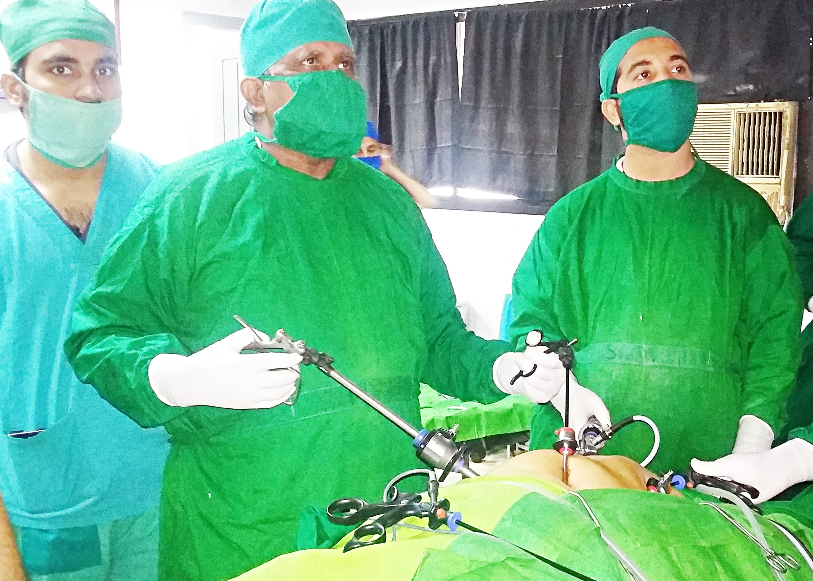
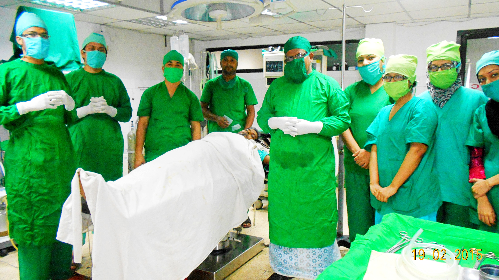
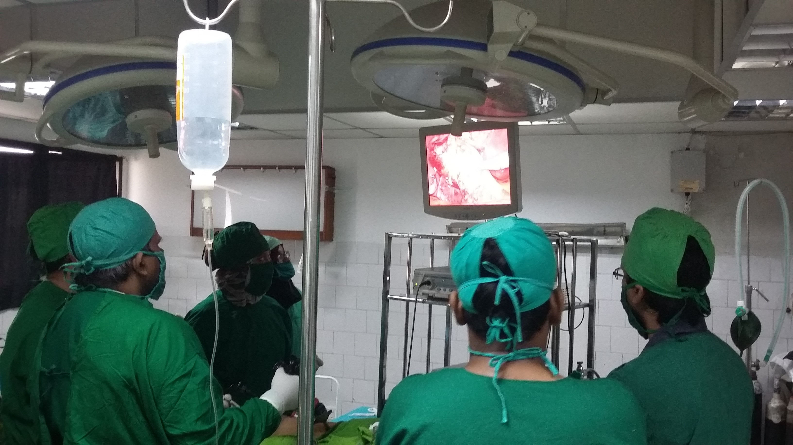

Dr Ashish Kumar Chowdhury his team is in Laparoscopic Cholecystectomy


He is highly expertise in laparoscopic Cholecystectomy, Appendectomy and a number of intra-abdominal laparoscopic procedures. He consulted approximately two hundred thousand patients and successfully performed thirty thousand operations under leadership with excellent results.

Dr Chowdhury is performing a Lap-appendicectomy in University of Science and Technology Chittagong.